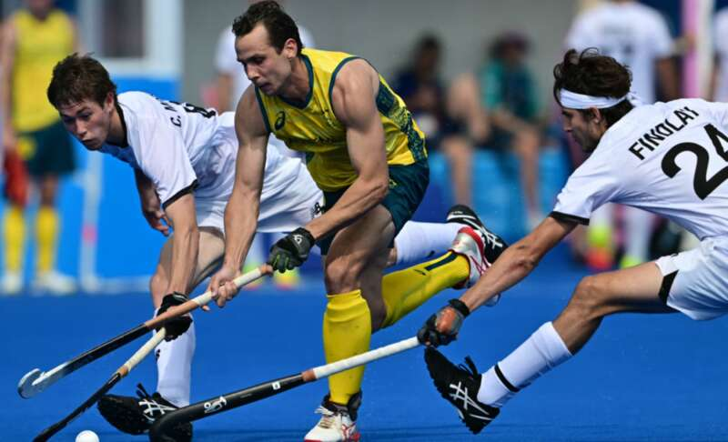
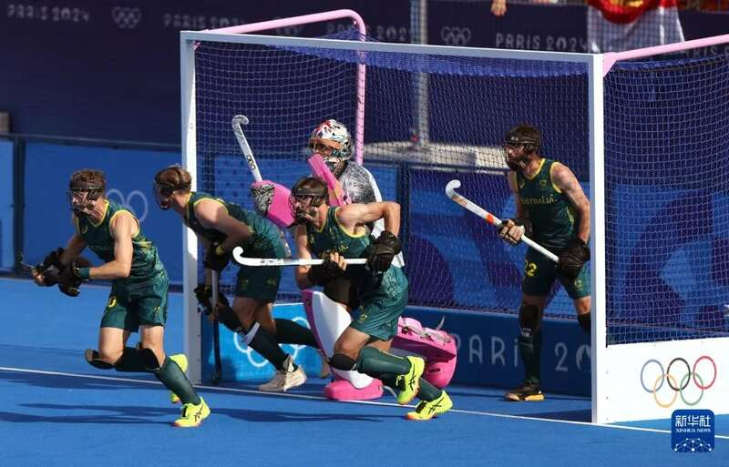

法国巴黎警方和检方当地时间7日透露，参加巴黎奥运会的澳大利亚队曲棍球运动员汤姆·克雷格涉嫌购买可卡因，当天凌晨被法国警方拘留。
克雷格最终只受到警告而非指控，并于当天获释。克雷格现已搬出奥运村，将无法参加本届奥运会闭幕式。

澳大利亚曲棍球运动员克雷格（资料图）
法新社援引法国警方消息人士的话报道，现年28岁的澳大利亚曲棍球队中场球员克雷格于当地时间7日0时30分左右在巴黎市中心一处公寓楼附近被抓获，警方怀疑他从一名17岁的毒贩那里购买可卡因。
那名要求匿名的警方消息人士说，克雷格被抓时持有约一克重的可卡因。与之交易的毒贩同时被抓获，其身上还携带另外几种毒品，包括摇头丸和人工合成毒品。
巴黎检察院在通报中证实，一名澳大利亚运动员因涉嫌买毒被拘留，警察目睹其6日深夜至7日凌晨在巴黎第九区一栋建筑墙角处进行毒品交易。通报未点名。
据悉，出售可卡因给克雷格的17岁小贩也同时被捕。

8月4日，澳大利亚队球员在巴黎奥运会男子曲棍球四分之一决赛中。新华社记者 任鹏飞 摄
克雷格4日刚代表澳大利亚曲棍球队出战与荷兰队的四分之一决赛。四分之一决赛中，澳大利亚队不敌荷兰队，无缘四强。
克雷格离开警局时告诉媒体记者：“我想为过去24小时内发生的事情道歉。我犯下可怕错误，我对自己的行为负全责。”他还表示其个人行为“不反映自己的家庭、队友、曲棍球运动和澳大利亚奥运代表团的价值观。很抱歉让你们蒙羞”。
澳大利亚奥林匹克委员会7日晚些时候表示，克雷格最终没有被正式指控，在受到法官警告后获释。
澳方参赛代表团团长安娜·米亚雷斯说，克雷格已道歉，表示忏悔，承认自己犯错。克雷格将为此承担后果，失去自己在奥运会剩余赛程中的待遇。“他已搬离奥运村。按照我的理解，他没打算回来参加奥运会闭幕式，即使有意也不能参加”。